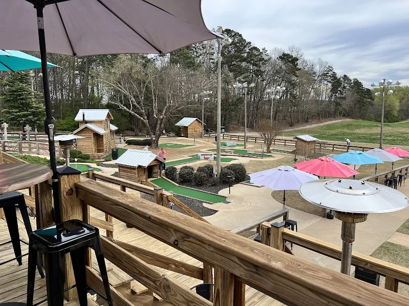
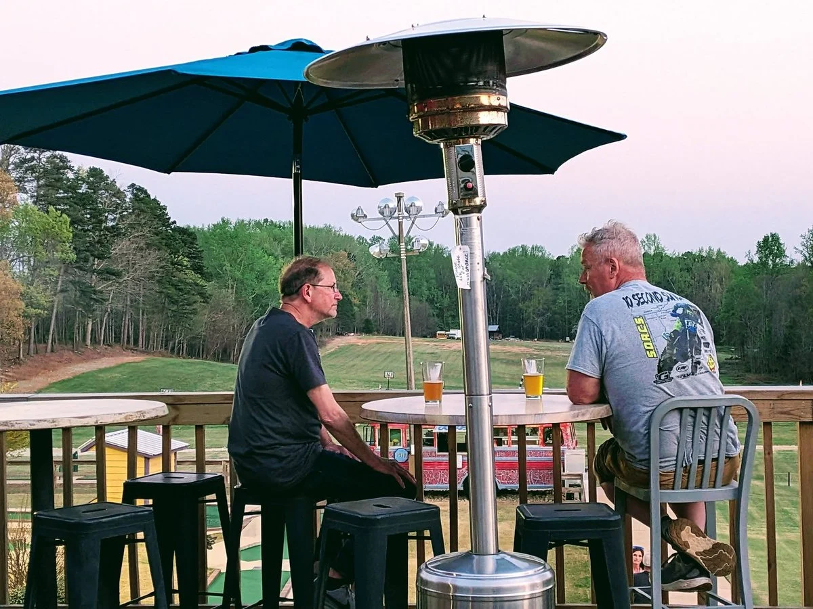
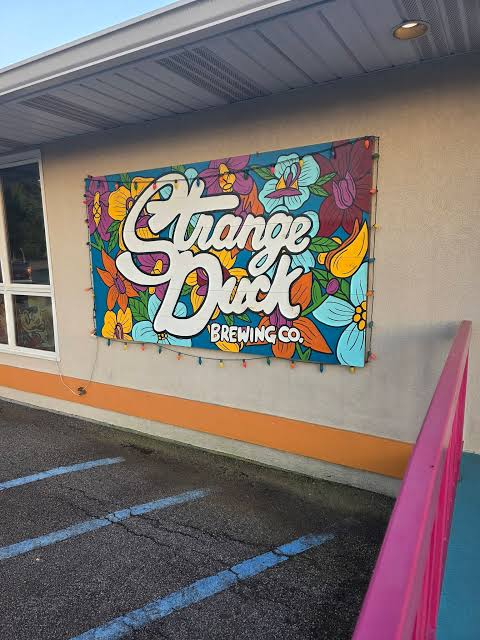
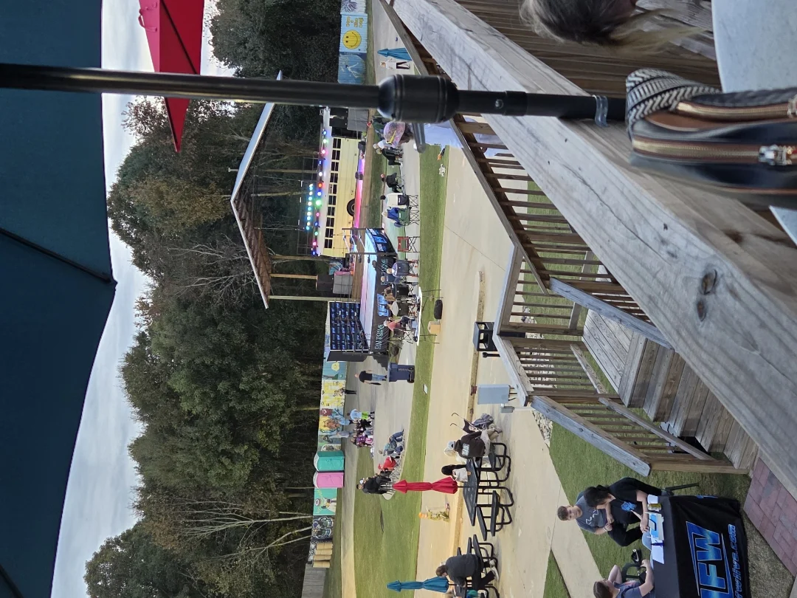

01 / A LITTLE FRIENDLY COMPETITIONPints & putts
Eighteen holes of mini golf. One very good excuse to stay for another round.
INDEPENDENT SPIRITS. COMMERCE, GEORGIA.
A small-batch brewery with a big imagination.
Come for a pint. Stay for everything else.
NOT YOUR EVERYDAY WATERING HOLE
Some places are built for a quick drink. This one is built for an afternoon that turns into an evening.
Set on a former fun park in Commerce, Strange Duck brings together house-brewed beer, live music, 18 holes of mini golf, and room for the whole crew to unwind.
Meet your kind of strange

Come as you are.SMALL BATCHES. BIG PERSONALITY.
Bright sours, easygoing lagers, hop-forward IPAs, and the occasional delicious oddball. There’s always a reason to try something different.
Key lime pie gose · 4.7% ABV
02 / MALTY & MELLOWAmber / red ale · 5.9% ABV
03 / DARK & DECADENTS’mores stout · 9% ABV
A taste of our rotating collection. Availability changes with the taps.
See the beer collectionMORE THAN WHAT’S IN YOUR GLASS

01 / A LITTLE FRIENDLY COMPETITIONEighteen holes of mini golf. One very good excuse to stay for another round.

02 / TURN UP THE GOOD TIMESLive music, trivia, art, and community happenings give every visit its own personality.
 03 / BRING YOUR PEOPLE
03 / BRING YOUR PEOPLEA family-friendly hangout with space to play, a patio to settle into, and plenty of fresh air.
Eastern time. Holiday and event hours may vary. Call ahead to confirm.